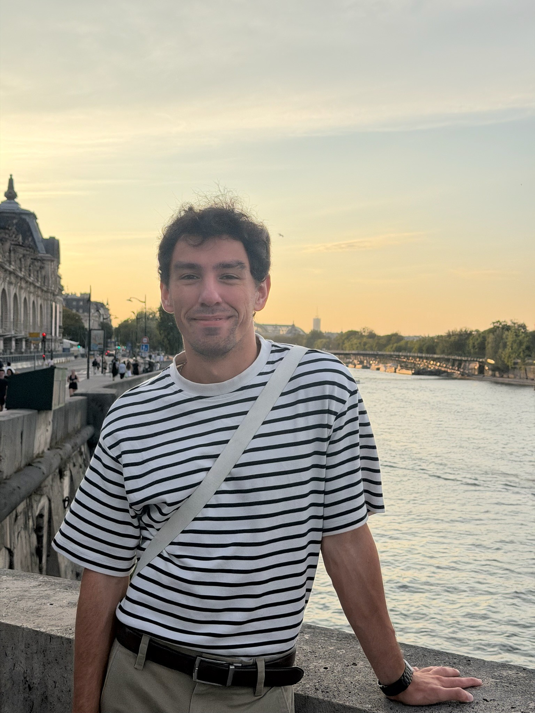

Riley Lawson
PhD student, MIT
Hello, welcome to my website! I am a fourth-year PhD student at MIT working with the Perceptual Engineering Lab advised by Dr. Jas Brooks. Previously, I worked with Dr. Marija Ilic in the Electric Energy Systems Group where I completed my Master of Science in Electrical Engineering.
My research interest lies in understanding our interior world better to allow us to interface with the exterior world more easily, more effectively, and in new ways we haven't even thought of. I am particularly interested in research directions which have clinical application to the treatment of mental health conditions such as panic disorders.

Research
-
2026
Multi-Conductor Flexible Universal Branch Model for Efficient Hybrid AC/DC Power System Load Flow Computation
IEEE PES General Meeting
-
2025
Energy Dynamics and Control for Interoperability
2025 57th North American Power Symposium (NAPS), IEEE, pp. 1-6
-
2025
Transmission Line Dynamics Modeling For Power Electronics-Enabled Control in the Electric Power Systems
Thesis, Massachusetts Institute of Technology
-
2024
-
2024
Practical method for monitoring inter-area oscillations in electric power systems
2024 56th North American Power Symposium (NAPS), IEEE, pp. 1-6
-
2024
Optimality Conditions for Distributed Primary Control in Energy State Space
2024 10th International Conference on Control, Decision and Information Technologies (CoDIT), IEEE, pp. 2686-2691
-
2024
A method for monitoring slow electromechanical oscillations in multi-area electrical power systems: the case of four areas IEEE 39 bus power system
14th Mediterranean Conference on Power Generation, Transmission, Distribution and Energy Conversion (MEDPOWER 2024), IET Conference Proceedings CP904, vol. 2024, no. 29, pp. 755-760
-
2023
Analysis of Electric Vehicles Interfacing with Three-Phase Four-Wire Distribution System
2023 IEEE Power & Energy Society General Meeting (PESGM), IEEE, pp. 1-5
-
2021
Reactive Power Compensation in a Microgrid Coupled to Electrical Vehicles
2021 North American Power Symposium (NAPS), IEEE, pp. 1-6
The full list is also on Google Scholar.
Contact
- Emaillawsonri@mit.edu
- ScholarGoogle Scholar profile
- LinkedInlinkedin.com/in/riley-lawson